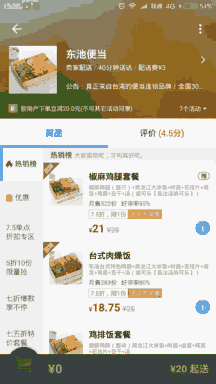

NestedScrolling机制-概述
Contents
如今，NestedScrolling机制(可以称为嵌套滚动或嵌套滑动)在各种app中的应用已经十分广泛了，下图是“饿了么”中的一个例子：

当向上滚动列表时，列表的父view(整个白色部分)会跟着一起向上滑动，当顶部的banner收缩到只剩标题栏时，则列表的父view保持固定，而列表继续滚动；当向下滚动列表时，则是相反的过程。
这种效果其实也可以通过CoordinatorLayout结合Behavior来实现，但阅读源码就会发现，CoordinatorLayout本身是一个NestedScrollingParent，此外，要实现这种效果还要求可滚动的列表是一个NestedScrollingChild，也就是说，通过CoordinatorLayout结合Behavior来实现这种效果，其内部原理也是NestedScrolling。
1 概述
NestedScrolling机制能够让父view和子view在滚动时进行配合，其基本流程如下：
- 当子view开始滚动之前，可以通知父view，让其先于自己进行滚动;
- 子view自己进行滚动
- 子view滚动之后，还可以通知父view继续滚动
要实现这样的交互，父View需要实现NestedScrollingParent接口，而子View需要实现NestedScrollingChild接口。
在这套交互机制中，child是动作的发起者，parent只是接受回调并作出响应。
另外：父view和子view并不需要是直接的父子关系，即如果“parent1包含parent2，parent2包含child”，则parent1和child仍能通过nestedScrolling机制进行交互。
2 接口和类
|
|
上面已经说过，要使用NestedScrolling机制，父View需要实现NestedScrollingParent接口，而子View需要实现NestedScrollingChild接口。
而NestedScrollingChildHelper和NestedScrollingParentHelper是两个帮助类，当我们在实现NestedScrollingChild和NestedScrollingParent接口时，使用这两个帮助类可以简化我们的工作。
以上接口和类都在support-v4包中提供。另外，一些较新的系统view都已经实现了NestedScrollingChild或NestedScrollingParent接口，也就是说他们直接支持NestedScrolling，例如：
- NestedScrollView 已实现 NestedScrollingParent和NestedScrollingChild
- RecyclerView 已实现 NestedScrollingChild
- CoordinatorLayout 已实现 NestedScrollingParent
- 等等
2.1 NestedScrollingChild接口
1 接口概述
|
|
1.public boolean startNestedScroll(int axes);
开启嵌套滚动流程(实际上是进行了一些嵌套滚动前的准备工作)。
当找到了能够配合当前子view进行嵌套滚动的父view时，返回值为true（Returns：true if a cooperative parent was found and nested scrolling has been enabled for the current gesture）。
2.public boolean dispatchNestedPreScroll(int dx, int dy, int[] consumed, int[] offsetInWindow);
在子view自己进行滚动之前调用此方法，询问父view是否要在子view之前进行滚动。
此方法的前两个参数用于告诉父View此次要滚动的距离；而第三第四个参数用于子view获取父view消费掉的距离和子view在此过程中位置的偏移量。
第一第二个参数为输入参数，即常规的函数参数，调用函数的时候我们需要为其传递确切的值。而第三第四个参数为输出参数，调用函数时我们只需要传递容器（在这里就是两个数组），在调用结束后，我们就可以从容器中获取函数输出的值。 如果parent消费了一部分或全部距离，则此方法返回true。
3.public boolean dispatchNestedScroll(int dxConsumed, int dyConsumed, int dxUnconsumed, int dyUnconsumed, int[] offsetInWindow);
在子view自己进行滚动之后调用此方法，询问父view是否还要进行余下(unconsumed)的滚动。
前四个参数为输入参数，用于告诉父view已经消费和尚未消费的距离，最后一个参数为输出参数，用于子view获取父view位置的偏移量。
返回值：(翻译出来可能有歧义，直接放原文)true if the event was dispatched, false if it could not be dispatched.
4.最后，stopNestedScroll()方法与startNestedScroll(int axes)对应，用于结束嵌套滚动流程；而惯性滚动相关的两个方法与触摸滚动相关的两个方法类似，这里不再赘述。
2 接口实现
上面只是讲了接口中的主要方法和调用时机，那么这些方法具体该如何实现呢？这时候就要用到上面提到的帮助类了。具体操作很简单：首先实例化一个帮助类对象，然后在要实现的接口方法中调用帮助类对象中的同名方法即可——帮助类对象已经帮我们完成了一切。
|
|
2.2 NestedScrollingParent接口
1 接口概述
|
|
从命名可以看出，这几个都是回调方法。当调用NestedScrollingChild中的方法时，NestedScrollingParent中与之相对应的方法就会被回调。方法之间的具体对应关系如下：
| 子(发起者) | 父(被回调) |
|---|---|
| startNestedScroll | onStartNestedScroll、onNestedScrollAccepted |
| dispatchNestedPreScroll | onNestedPreScroll |
| dispatchNestedScroll | onNestedScroll |
| stopNestedScroll | onStopNestedScroll |
| … | … |
1.public boolean onStartNestedScroll(View child, View target, int nestedScrollAxes);
| 参数 | 说明 |
|---|---|
| target: | 发起嵌套滚动的子View，此子view必须实现NestedScrollingChild接口。上面提到过，此子view并不需要是当前view的直接子view |
| child: | 当前view的包含target的直接子view |
| nestedScrollAxes: | 嵌套滚动的方向，可能是SCROLL_AXIS_HORIZONTAL 或 SCROLL_AXIS_VERTICAL 或 二者都有 |
当调用target的startNestedScroll(int axes)时，此方法就会被调用。在此方法中我们要做的就是根据target和nestedScrollAxes决定此view是否要与target配合进行嵌套滚动，并返回true(要与target配合进行嵌套滚动)或false(不与target配合进行嵌套滚动)。
2.onNestedPreScroll()、onNestedScroll()、onNestedPreFling()、onNestedFling()
这几个方法分别对应NestedScrollingChild中的dispatchNestedPreScroll()、dispatchNestedScroll()、dispatchNestedPreFling()和dispatchNestedFling()。
它们的参数也是基本对应的，以onNestedPreScroll()为例，参数dx、dy、consumed实际就是dispatchNestedPreScroll()中的dx、dy、consumed。
2 接口实现
onNestedScrollAccepted、onStopNestedScroll的实现同样是调用帮助类中的同名方法即可：
|
|
而另外几个方法的实现则由你的业务逻辑而定(详见下一节中的代码示例)。
3 流程
经过以上的介绍，我们可以大致将嵌套滚动的流程概括如下(以触摸滚动为例，惯性滚动(fling)的流程与此类似)：
- 调用child的
startNestedScroll()来发起嵌套滚动流程(实质是寻找能够配合child进行嵌套滚动的parent)。parent的onStartNestedScroll()会被回调，如果此方法返回true，则onNestedScrollAccepted()也会被回调。 - child每次滚动前，可以先询问parent是否要滚动，即调用
dispatchNestedPreScroll()，这会回调到parent的onNestedPreScroll()，parent可以在这个回调中先于child滚动。 disdispatchNestedPreScroll()之后，child可以进行自己的滚动操作。- child滚动以后，可以调用
dispatchNestedScroll()，会回调到parent的onNestedScroll()，在这里parent可以进行后于child的滚动。 - 滚动结束，调用child的
stopNestedScroll()。